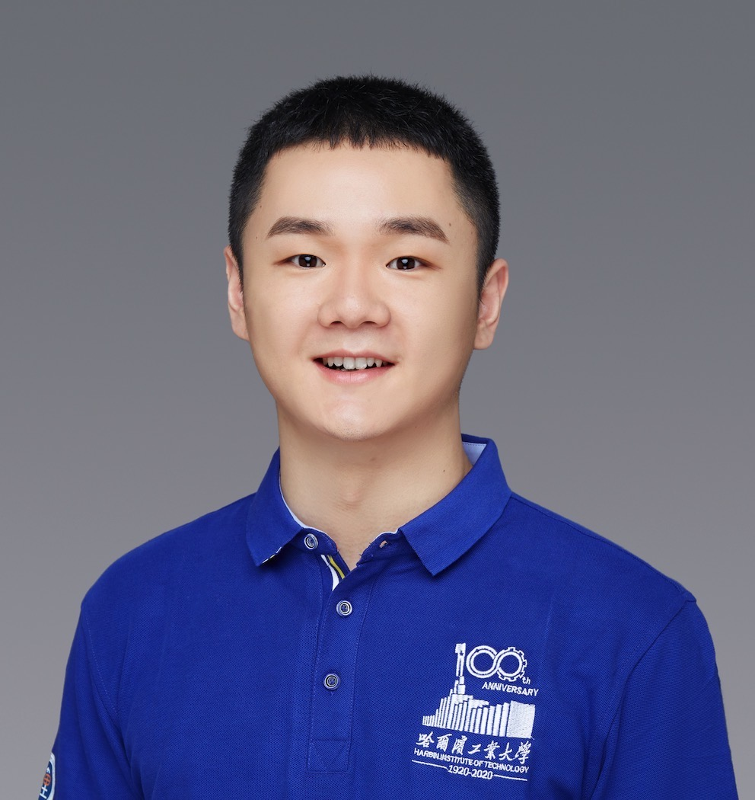
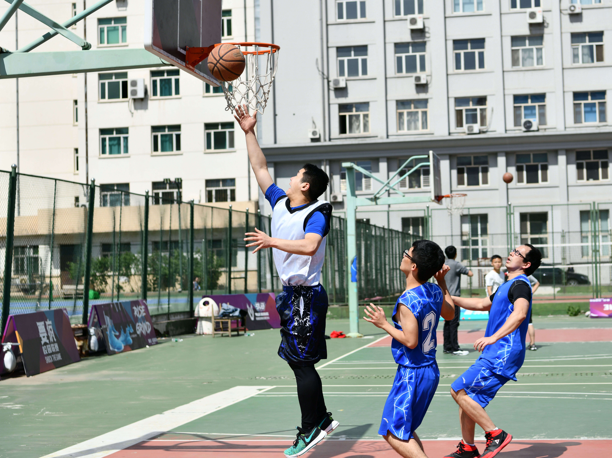

Text Generation Group
Research Center for Social Computing and Information Retrieval (SCIR)
Harbin Institute of Technology
Contact:
More about me: Google Scholar / Github / [Get CV in PDF]
Xiachong Feng (冯夏冲)
Text Generation Group
Research Center for Social Computing and Information Retrieval (SCIR)
Harbin Institute of Technology
Contact:
xiachongfeng1996 [at] gmail.com
More about me: Google Scholar / Github / [Get CV in PDF]
About me
Hi, I am a Ph.D. student from Harbin Institute of Technology, where I am a member of Text Generation Group of HIT-SCIR Lab under the supervision of Prof. Bing Qin and A.P Xiaocheng Feng . I was also a remote intern at NUS-WING Lab, advised by Prof. Min-Yen Kan. I will join the HKU NLP group of University of Hong Kong as a postdoctoral fellow under the supervision of Prof. Lingpeng Kong in early 2024.Research Interests
- Natural Language Processing
- Text Generation
- Summarization
- AI + Neuroscience
Education
Harbin Institute of Technology
|
Experience
WING, National University of
Singapore
|
Teaching Experience
- TA, NUS, Natural Language Processing: Foundations, Sep.2022 - May.2023
Honors & Awards
- Tencent Scholarship, 2022
- National Scholarship for Ph.D., 2021
- China Scholarship Council (CSC) Scholarship, 2019
- Outstanding Graduate Award at Provincial Level, 2018
- Outstanding Student Cadres at Provincial Level, 2017
- National Scholarship for B.E., 2017
- National Scholarship for B.E., 2016
Professional Service
- Regular PC Member (or Reviewer):
- ACL, EMNLP, ACL Rolling Review, COLING, NLPCC, CCL
- NeurIPS
Miscellaneous
- 🏀 Basketball
- 🏸 Badminton
- 🏃🏻 Running
- ⛰ Hiking

Harbin, captain of the basketball team.